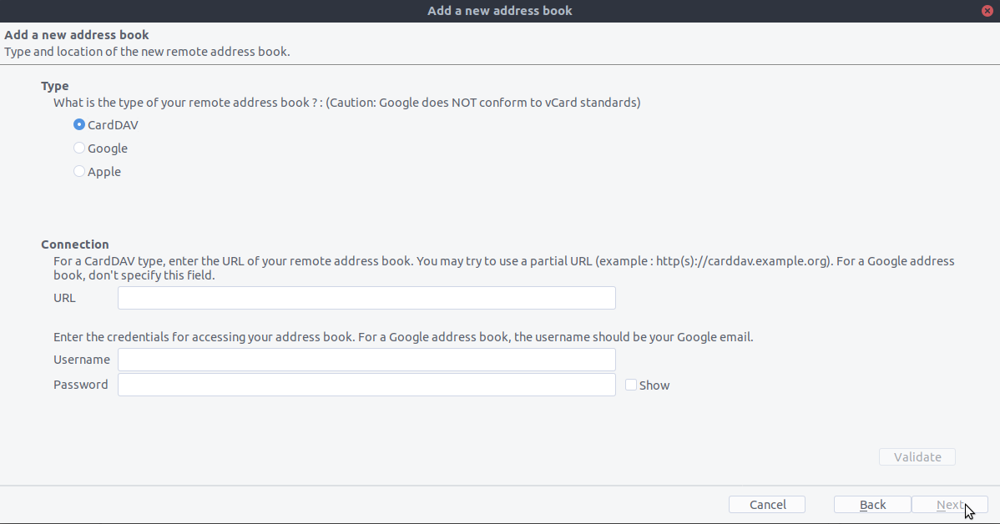

المزامنة مع "ثندربيرد" Thunderbird
`ثندربيرد Thunderbird ـ <https://www.thunderbird.net> `_ هو عميل بريد غني بالميزات وناضج يمكن تحويله إلى مدير معلومات شخصية كامل (PIM). منذ الإصدار 102، يدعم مزامنة دفتر العناوين عبر CardDAV والاكتشاف التلقائي للتقويمات ودفاتر العناوين المتاحة على الخادوم.
الطريقة المعتمدة
Since Thunderbird 102, the CardDAV & CalDAV protocols are natively supported.
Contacts
On the address book view, click the down arrow near New Address Book and choose Add CardDAV Address Book.
In the next window, type your Username and Location (Server URL).
في النافذة التالية، سيُطلب منك إدخال اسم المستخدم، و كلمة المرور لهذا الحساب.
سيتم تحديث النافذة السابقة و ستسألك عن دفاتر العناوين التي ترغب في مزامنتها.
إختَر ثم اضغَط على استمرار Continue.
إذا أردت لاحقًا إضافة دفتر عناوين جديد، فيمكنك إعادة كل هذه الخطوات و سيقترح النظام عليك فقط أسماء الدفاتر التي لم تتم مزامنتها سلفاً.
Calendars
Go to the calendar view in Thunderbird and select the New Calendar... button at the bottom of the left side panel.
Choose On the network:

Type your Username and Location (Server URL), then click on Find Calendars.
Choose which calendars you want to add and click Subscribe
نفس الشيء هنا. إذا أردت لاحقًا إضافة المزيد من التقاويم، فما عليك سوى إعادة الإجراء.
بديل: استعمال المكون الإضافي TbSync addon
بالنسبة لهذه الطريقة، أنت تحتاج إلى مُكَوَّنَيْن إضافيين أن يكونا مُنَصَّبَيْن:
When they are installed, go to Extras/Synchronization settings (TbSync) if you are on Windows, or Edit/Synchronization settings (TbSync) if on Linux, then:
In the account manager choose Add new account > CalDAV & CardDAV
In the next window, go with the default called Automatic Configuration and click Next
Enter an Account name (which you can freely choose), a User name, a Password, the Server URL, and click Next
في النافذة التالية، يجب أن يكون TbSync قد اكتشف تلقائيًا عناوين CalDAV و CardDAV. عندما يتمّ ذلك، أنقُر فوق تمّ Finish
إختَر مُربّع تمكين ومزامنة هذا الحساب Enable and synchronize this account. سيكتشف TbSync الآن جميع دفاتر العناوين والتقاويم التي يمكن لحسابك الوصول إليها على الخادوم
حدِّد المُربَّع الذي بجوار كل تقويم أو دفتر عناوين تريد مزامنته، و عيّن فترات المزامنة ثم اضغَط على الزّرّ مزامنة الآن synchronize now
بعد اكتمال المزامنة الناجحة الأولى، يمكنك إغلاق النافذة.
من الآن فصاعدًا، سوف يقوم TbSync بالعمل نيابة عنك. لقد انتهيت من التكوين الأساسي و يمكنك تخطّي الأقسام التالية ما لم تكن بحاجة إلى دفتر عناوين أكثر تقدمًا.
بديل: إستعمِل المُكوِّن الإضافي CardBook add-on (لمزامنة جهات الاتصال فقط)
CardBook هو بديل متقدم لدفتر العناوين في "ثندربيرد" يدعم CardDAV. يمكنك تنصيب كل من TbSync و CardBook على التوازي.
أنقُر فوق رمز CardBook في الزاوية العليا من Thunderbird ـ :

في CardBook ـ :
إذهب إلى: Address book > New Address book Remote > Next
حدِّد ** CardDAV **، و املأ عنوان خادوم نكست كلاود و اسم المستخدم و كلمة المرور

أنقُر فوق "توكيد Validate"، أنقُر فوق "التالي Next"، ثم اختَر اسم دفتر العناوين و انقُر فوق "التالي Next" مرة أخرى:

When you are finished, CardBook synchronizes your address books. You can always trigger a synchronization manually by clicking "Synchronize" in the top left corner of CardBook: